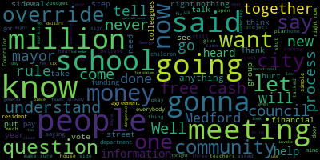

[Scarpelli]: Right now, for the November 5th ballot, we'll have question six, question seven, question eight. Question six is a debt exclusion, like I explained, is a tax that you'll be taxed until the project or the bond is complete, and then it comes off the tax. And that reads, That exclusion on fire station shall the city of Medford be allowed to exempt from the provisions of proposition two and a half, so-called the amounts required to pay for the bonds issued in order to pay for costs of construction, a new fire station headquarters to be located at 120 Main Street in Medford, including the payment of all costs related design, the project equipping and furnishing, the project site improvements and all other costs incidental to related there too. So you'll vote no, because that's been a lot of people's questions. George, I thought you supported the firefighters. Well, when you hear it straight from the people that I think Danielle put it perfectly when she said, we don't want to sound like the angry people. Instead, look to see what our firefighters have gone through, what our men and women have gone through in the last year. and how they've been treated. And yet again, they're gonna stand up and say what? What you're offering was not transparent, was not inclusive, was a decision made in a box, and the funding is gonna hurt our residents. And they're willing to stand up and say what? We'd rather not have our residents of Medford hurt financially for an inferior product. So please do not vote for question six. Thank you, Danielle. Question seven is funding schools and street repairs. Shall the city of Medford be allowed to assess an additional 3.5 million in real estate and personal property taxes for FY25 general operations of the Medford Public Schools. $3 million includes but not limited to funding costs for teachers, literacy coaches, behavior specialists, administrative assistants, nurses, and for regular facility maintenance and for FY25 general operations DPW, including but not limited to additional staff for road and sidewalk infrastructure repair for fiscal year beginning July 1, 2024. Okay, this question seven. $500,000, come on, for the roads and sidewalks. ARPA, when it was originally put forth, was directly supposed to go to infrastructure needs, roads and sidewalks. Not at all. So now we sit here and say we're going to give them $500. Thanks. This is an issue that I put forth years ago. We tried to put a sidewalk and hot tub crew together to save the city money because the mayor kept coming to us for $2.5 million bonds for sidewalks. And we never saw sidewalks being done. We could never catch up. And I know my colleagues say, see? See? We're right. We have no money. Not right. Wrong. And again, I love the dialogue. Public schools, teachers, literacy coaches, behavior specialists, nurses. The superintendent has already, the expert in the state has shared some amazing information. Have we been resourceful? Has the school committee and the school department been resourceful in creating revenue? No. I know my colleagues will say, again, he's not telling the truth because their social media sites tell you that. But I have shown everyone, very simple, meeting after meeting, and if you want to look up, watch them on YouTube, From step to step, we showed an avenue to come out of this without hurting kids or teachers or schools. We showed them that avenue through free cash. And what did they do? They imposed a rule to shut me up. So now we move forward. One of our members got a phone call from a school kid member. And that school kid member said, How dare you put a no sign on your lawn? Are you going to be happy when we lay off 40 teachers? Shame on that person. Because that's the same exact question I posed in the open meeting in front of everybody and said, why put the schools, the children, the teachers through this? Take the $5 million out of free cash, put the fear away, and then let's all get to the table and make the right decision for our community with an open and transparent process. So that, ladies and gentlemen, question seven, no. I like the drama behind this. Question eight's intense. Thank you. So question eight. This override will expand vocational programs and increase student access to the arts by giving us the funding to pay for new programming, staff to help students succeed, fix the school schedule at the level and increase educator and paraprofessional compensation to ensure living in competitive wages. Doesn't that sound expensive? Vocational. I believe what it is, Roy, you can help me if I'm wrong, is expanding the day, the school day, and the vocational day would kind of merge together. That's what we're asking for, right? I believe it's maybe through negotiations will be the biggest cost. Well, what we're looking at is nothing close to $4 million. Not even close. Not even close. Understand the trend here. Six, we heard. Seven and eight, education. Understand every single community that has fought for an override in their communities has used what? the children, and the schools. Don't hurt our children, don't hurt our schools. Well, I asked my colleagues, and we've heard people on the other side that's supporting this, where were you the meeting that you shut me up when we asked for free cash that we had? And you were there, and you still have it. So let's understand this. Now that you know the questions, let's go all the way back now. And let's make sure we get this and people can hear it, you can share it with your friends. All Medford, at no time have we ever said, we're against an override. We do not want it, never. That was never said. What we said, was let's fix what's wrong now with that $5 million. Let's bring everybody together to the table. Let's have an open and transparent process. And let's work together to make sure we, if the need is there, that we fulfill it together. And don't divide the community. But this is what has happened now. Now we're dividing. Now it's yes or no. And I'll be honest with you. As a responsible member of this community, if I didn't think now that we're here, there's nothing we can do, we'd have to step away, I'd step away. But we have $34 million in free cash. $34 million in free cash that has not been used that can recover this funding and make sure that we do this process correctly. This is what we're talking about. And for those who don't know, Just a quick step-by-step so you understand it's never quick with me. We had our budget meeting last year, the year before last. And my colleagues were in unison, Councilor Caraviello was there, Council President Beas was there, and we were all together in the process that we cannot support this budget. It's too dangerous. So we were all for it. Until the night of the meeting, Councilor Caraviello and I stood there, and our council leadership team came out and said, hey, we just met with the mayor behind closed doors, and we're gonna vote for the budget. They've come to an agreement. What agreement? I didn't know what agreement it was. Councilor Caraviello and Councilor Knight didn't know what agreement it was, but there was some sort of agreement. Well, as this grew, we kind of realized what the agreement was. A financial task force was created. A school kid member, two city Councilors, the chief of staff, and the mayor. Five people with no background in financial battles. Nothing. At least not enough to lead us to the spot we need to be. So we move forward. This financial task force is meeting. We don't hear anything. There are no minutes. There's no information. We're told we're going to get in a meeting before we do anything. Well, you hear rumblings, so we call for a meeting. So we have our city council meeting. And I believe it was the week before we had a subcommittee meeting, and a very smart red They said, so if you ask for an override and it doesn't pass, what does that mean? That means devastation for the school department and our children. Imagine. So I came back the following week and I presented a plan that said what? Use our free cash, let's come to the table and do the right thing for our community. and let's not leverage our kids in our schools. But guess what happened? It's called Rule 21. Council Scarpelli shut down, can't speak. And this is how we're getting messages. The Financial Task Force's plan was an override plan. That was what they came out with. We asked for the minutes, we asked for more information. How did we get there? Who was involved? No answer. Now maybe the other side, because my friends are telling me, George, they're beating you up, they're beating you up. That's fine. But this is all true. This is all on tape. So, typical fashion, Friday we get emails from the mayor's office with $7.5 million. Tuesday we come to a meeting, we're gonna vote on it. As a responsible city councilor, I will now invoke our Rule 21, close the meeting, and ask for an open meeting with everybody to talk about this in more depth. Something that's unheard of, has never been heard of, never been done before, but our council leadership suspends the rules of the meeting and imposes a vote to not invoke Rule 21. Done, you can't talk about it. But I will tell you, the council had five subcommittee meetings to talk about a city council newsletter. Five. And guess what that, that's free, nothing. But, the paper's adding up to $7.5 million and possibly more. They don't wanna talk about it. So, what do we do? We move on to the next meeting and I said, okay. I reach out to my state representative and I asked him, what is the plan? What can I do? And they said, okay. Legal from the state said you can now invoke Mass General Law 43, section 22. That supersedes any method rule, shuts the meeting down. Well, we get to the next meeting. Our leadership team does the same exact thing. Suspends the rules. Imposed, says they cannot impose rule 21. I then invoke section 22. Council leadership says, no, you can't do that. Against the rule, against the law. Because what was gonna be said is this. And listen closely, because this is how real communities do it. In 2009, working in the city of Somerville, Mayor Joe Curtatone was at a crossroads with his community. Big cuts looming. He convenes a group, a working group, a financial working group that consisted of financial minds from Tufts, MIT, Harvard, banking leaders. You had the Sloans from Century Bank. You had his financial team present. You had community leaders and business leaders all in a row. And they worked on a plan because they said you needed to figure out three things before you wanted to go to an override. One, how do we get there? We still don't know how we got here. At least publicly, there's nothing been mentioned. Two, how do we fix it? Three, how does this never happen again? That's what we were taught. Well, they came out and they said, okay, this is what we're going to do. We're going to look at traffic and parking fees. Not going to make people happy, but they're going to take that money. They're going to increase those fees. They're going to take that money, and that's going to be dedicated solely to the school department. Boom. Need taken away. Next. We need streets and sidewalks. How do we figure that out? The focus is fees and fines for trash and building. And boom. Developers pay for that. And then the third piece, the most important piece, they sat together and they said, well, what can we do so this never happens again? How do we bring Somerville out of this? Well, they started this little project called Assembly Row. And now, whether you like it or not, there's a lot of money coming into the city. Now, maybe you might question the growth, maybe question how they got there. That's not what I'm saying. What I'm saying is, that was an open process with financial minds that sat together to find a solution. What has happened here, both in the fire department and the school department, it's been done in a vacuum. Nobody knows. I know that a member of the community did file a FOIA request asking information for, we're waiting on that, hopefully we get that soon, that we can share with the community of what was shared, minutes, any notes, anything taken with this financial group? Who were the professionals they might have brought in that we don't know that could have helped them? Nobody. And here we are today, middle of September, people still don't know that there's an override vote. Like Councilor Caraviello said, he had explained to a person yesterday, why are we fighting it? $7.5 million for a new high school? That's great. But this is the problem. This is the problem. So people are saying, you know, but, you know, Councilor Scarpelli shouldn't be doing this. He's a city councilor. I don't give a shit. I'm going to fight for what I think is right so every citizen is heard. Because I will tell you, it's not that I'm new to this, or I wouldn't do this, or I wouldn't have the guts to do something like this, because There were three former Councilors in this room, and only one of them, sorry Rick, only one of them put forth a debt exclusion that was probably put together by the best financial mind in Medford, an Alicia Nunley, and we looked at the process of creating funding for a new main fire station on Main Street. And it was so simple. We would exclude senior citizens because you know what? You're hurting. Senior citizens are hurting. The vulnerable community, our disabled, our veterans, eliminate that group, those groups, and see what we can do. And I believe at the time it was $17 a month. We could swallow that, couldn't we? But that was with the process that gets started. Even with this process right now, nobody knows what's going on. We still don't know what's happening. Nothing's been posted. I know there's rumblings that money's already being spent from free cash out of $34 million. Nothing's been done yet. So having this meeting tonight is so important, this fundraiser's so important. Because I tell you, I gotta thank so many people. The restaurants that donated, LaCasha's, Ronnie's Place, Richie Razzo's from Razzo's and Avellino's always donate. Thank you so much. The thousands of dollars that were donated just the other day was amazing. And guess where that money's coming from? You. hard-working, method residents that want to do anything they can and fight. My neighbor, who's 84 years old, came to my house today and said, George, I can't come. He has $8. And I said, God, no, no, no. Because I tell you, what we do know is Kelly has done a great job with the real estate side and understanding the assessing side. We have Nate Merritt's been doing his deep dive into the calculator that they have on their site that says all you do is poke in these numbers, bam, it's always this much money, you can handle that. Bullshit. Because I'm gonna tell you straight up, $380 for a person might sound not a lot of money, but some of the people I've talked to, And I keep saying it, I won't use her last name, but I love her dearly. I see Mrs. Jones. She said, George, help me understand this. I bought my house 50, 60 years ago. So $48,000, I believe she said. I think I tell people $50,000. But now my house is worth a million dollars. My husband died 15 years ago. I was a seamstress. My social security doesn't cover my taxes. So should I move? Some people want them to do that. Because I haven't heard one thing supporting our senior citizens. I haven't heard one thing how we're gonna help those homeowners that are struggling to stay in their homes. Cuz one of my council colleagues actually said to me is, if your house is worth a million dollars, just take a hundred out. That simple. The understanding of not understanding what a home equity line is, that's devastating. Devastating for a resident. So we're not candy coating anything. I'm not hiding anything. Everything you see has been public. I have told my council colleagues what they're doing is dangerous to our community. We still don't see the information how we got here. The way they want to get out of it is by taxing. Here's the other piece. Hey, it's only this much money. If I hear that again from people, I'm going to lose my mind. Because understand this, and I'll end with this. What did we talk about one of our first meetings subcommittee? Rent control. Then we talked about a transfer tax. Then we talked about a registry fee. And then we talked about overrides. But it stops there, right? Oh no. Because my brother, I'll use my brother for example, just got his house assessed. An additional $400 a month. Now, he's a young man, works very hard. Hopefully, he can recover. But then, Kelly did some homework, and we found out his assessment in 20 to 24 that's starting now, he thinks it's over with the assessment side. But Kelly, what are we hearing? In 2025, you're gonna get the sales data for 2023, because the peak of the real estate market will pass your home. It's going up again. So have we heard any of that in their homework? No. But it's only $400. But let's go a step further. A minimum $200 million renovated high school. Who fits that bill? You. We want a new high school. A new one. Take it down to one new high school. Looking at $400 million. You people don't understand what that number equates to. It's dangerous. It's scary and it's dangerous. So I didn't want to bring you out to scare you, but I brought you out to wake you up. This group never wanted to say no to an override. But we heard it from the smartest educational mind that I've been around. that we haven't seen enough creativity, we haven't seen enough information, and there has been no transparency to show that we need this. We've talked to our fire department, our firefighters are saying, don't hurt our residents. Don't build something just to check a box. We don't want the fire station. Done. So if they're saying it, And I've spelt it out for everybody. It's a very simple process right now. Fix the budget with $5 million in free cash. Let's move forward and think of different ways to be creative. Let's be shocking and look at new growth and development. Something we haven't seen. Am I lying, Ricky? How many 40B jobs did we lose? Three, how much money just in permits with those three projects? Millions of dollars. And then tax revenue. You've done the homework on it. How much? $16 million. So that's one building. So again, these aren't lies. These are true numbers. And again, you wish you had a platform But I've been shut up way too easy. Well, in this forum, I'm not. And you're my voice. You're helping us spread the message now. So this is what we need. We have a list right now of over 600 volunteers. 600 volunteers. We have captains that are going to be doing standouts that we have about, what, 60 to 80 people? 60 to 80 people already signed up to do standouts. I'm asking all of you, October 15th, Zach, if you wanna come on out, we're gonna meet at Hormel Stadium. Everybody's gonna come out and we're gonna take our message and we're gonna go to the neighborhoods and we're gonna knock on doors and we're gonna give people the information that no one in the city has given them to help them understand. Understand the rest of everybody else, don't be afraid. If a school kid member knocks on your door, it's a shame on you beyond that you have the information right now. beyond that you know the truth. So tomorrow, when you go to the coffee shop, or tomorrow when you go next door and you talk to Dave and have a cold drink, sit down with him and say, hey, do you know about the overrides? Because the fire don't want it, the educational minds think it's absurd, and it's going to hurt people. And here's the other piece that I seem to forget, and I don't ever want to forget this. I have lived in a, grew up in a home with tenants. My dad made sure that we treated our tenants with pride and with respect, and we made sure we kept our rent reasonable. So the fact that my brother took that, and we still have the same family there that have been there for 10 years. That family pays for a four bedroom in Medford. They pay $2,400. Pretty cheap. We all know that. He will not raise that rate. What people have to understand, if these taxes come about, taxpayers cannot handle this on their own. It's going to be passed down to the tenants, and renters are going to go through the roof. So I want to thank all of you for coming out tonight. Did I miss anything, Rick? Are you sure? He's my captain. Rick's going to tell me. You know, again, I will tell you, We've got great people working on this. I'm so excited for the energy. Right now, we have 260 signs already on the street. Steve's gone. We have 260 signs on the street, and we have another 200 here tonight. Make sure you take your sign, but make sure you leave your name and your address so we know you've taken it. And show your neighbors and just give us a call, just so people know. An override. When you vote for an override and we give the mayor $6 million, even though they say that the money is going to go to the vocational school or art programs, that's not necessarily true. The money goes into the general fund to be used to the mayor's discretion. Okay, so again, there's a reason why we're here. $9 million in free cash. Those people that want to know real simple what free cash is, free cash is the money that we approve for the prior year in the budget that the mayor does not use, does not spend, and then it gets certified and carried over. And then it goes into an account that she can do anything she wants with it. It's very simple. So I hope tonight what we really wanted to do is educate some people. bring them out, have them know what's going on. Understand that we'll be having, if you please sign up for the standouts, we'll be doing door knocking. But the big one is gonna be October 15th, Saturday, nine o'clock at Formell Stadium. We're gonna be meeting there and we're all gonna be hitting the streets. We're gonna be going into the neighborhoods. We're gonna be knocking on the doors, talking to your neighbors and letting them know that if this is voted through, it's not gonna hurt the children. The mayor's just gonna have to put the money that she's playing with back to where it's supposed to be and help our children and help our schools and help our seniors and our residents so they don't get killed with these taxes. So again, thank you all for coming. Have a safe ride home and we'll talk to you soon.
|
total time: 30.44 minutes total words: 4098  |
|||
{kind=link}